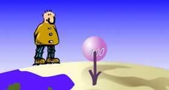
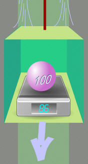

Apparent Weight
Gravity causes Weight

An objects weight is how hard gravity pulls on it.
Gravity is a basic part of nature where all objects with mass attract each other.
The Earth's mass of 5,973,600,000,000,000,000,000,000 kg pulls objects towards it with quite a large force!
But Scales Measure "Apparent Weight"
| Scales can measure the force of gravity ... but they can also be fooled, because they measure any "downwards force" and don't know if it is gravity or some other force! |
Just jump up and down (gently!) on your scales at home to see your apparent weight change, while your weight (and mass) stays the same.
Your weight is the same because the force of gravity hasn't changed, but your apparent weight changes.
Here is another example:|
Put the object in an elevator as it moves ... the scales show less! But it still has a weight of 100 kg.
|
 |
Acceleration (how fast velocity changes) needs force, and the scales show this.
Question: What happens to the apparent weight when the elevator accelerates UP?
Changing Speed
If something is pulled with a continuous force (and there is nothing dragging it back) it will continually speed up! So changing speed and force are connected.
Have you noticed how you feel lighter when an elevator first starts moving down, and you feel heavier when it slows again?
That is because the speed needs to be changing to affect the apparent weight!
If the elevator is moving at a constant speed there is no difference in the apparent weight compared to when it is sitting still.
Why? It takes force to make something move faster (or slower). If something moves at the same speed you will not feel any extra force.
That is why you can sit in a moving car or train, and everything seems normal (unless the driver speeds up or puts the brakes on).